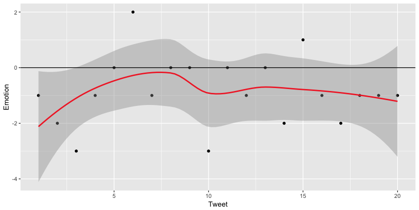
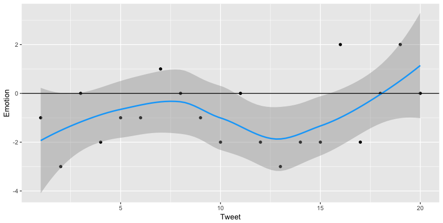

By: Tiffany Chang
#PrayforParis, #MeToo, #NeverAgain. These are hashtags that have mobilized
and united people all around the world in, what would have once taken
months, hours or even minutes. Social media platforms, especially
Twitter, are vectors for this magnitude of social impact. This spread of information
attracts attention, drives action among groups and individuals, and creates a global network effect.
Twitter has been used as a core medium to share experiences
and gain global traction around crises. In September of 2017,
people used Twitter to share about Hurricane Maria in Puerto Rico. People
and companies, like Budweiser, have united around relief efforts to support
this disaster. More recently, students at the shooting at Parkland High School
in Florida used Twitter and other forms of social media to share their first-hand
experiences at the site of the shooting. The circulating videos and pictures
on social media have gained global traction, and have empowered citizens
and companies, like Dick's Sporting Goods, to take action.
This analysis explores how social media, specifically Twitter, has driven
change around a crisis. Specifically, it explores how Twitter and online
traction differs between the two types of crises: shootings and natural disasters.
I analyzed the spread of content, its effect on stimulating online discussion and
interest, and compared and contrasted the content between shooting crises and natural disasters.
In order to perform the analysis on three-dimensions, I fetched data from
multiple sources. I used twitteR
to pull tweets regarding both types of crises. I then used gtrendsR, a R package
that allows API calls to fetch Google Trends data, to retrieve information
on online interest over time regarding the direct topics ("Parkland Florida School Shooting",
"Puerto Rico Hurricane Maria") and its broader topics ("Gun Violence", "Disaster Relief") that
have been focal points of the respective post-crises discussions.
In order to perform content analysis on the Tweets, I used syuzhet, a
sentiment analysis package, and its dependent package stringr.
I chose the NRC emotion lexicon method to add more color to the text analysis.
In terms of visualization, I used plotly and ggplot2.
Visualizations were then exported as PNG files or uploaded to the plot.ly server.
Some say that it should not take an tragic event like a shooting to spur discussion around gun violence. Similarly, it shouldn't take a territory left in devestation to start discussions around how to relieve people and provide aid. But how do people actually behave? In this analysis, I focused how online engagement, driven by various forms of media including Twitter, have changed around political topics.
Hurricane Maria stimulated interest around disaster relief
Disaster relief has been a topic at mind over the 30 days around Hurricane Maria.
Hurricane Maria significantly drove people's engagement around disaster relief.
However, what's interesting to note is the steeper decreasing rate of engagement
around the direct topic and the lower decreasing rate of interest around
disaster relief.
During this time, I believe that people were moved into discussion
around these topics. This crisis enabled opportunities for
companies like Budweiser to take action. As individuals and companies began to take action
and consider how to be prepared to aid future disasters, the
discussion around the direct event may have tapered, but online media still provided
a medium for people to discuss a better future around the broader topic.
States near Puerto Rico have been mobilized to take action.
Traction also spread world wide, but the concentration of engagement was in Puerto Rico and the United States. I hypothesized that this was driven primarily by geographic proximity and that other countries didn't necessarily find it a duty to provide aid to this situation. However, what is interesting is the discrepancy between online engagement in "disaster relief" vs "Puerto Rico Hurricane Maria". Around this time, Hurricane Harvey just hit Houston, TX. This could have driven the engagement with disaster relief elsewhere outside of Puerto Rico and potentially have neglected responsibility with aiding Puerto Rico.
The Parkland shooting significantly drove discussion on gun violence
Despite the number of shootings since Columbine, it's interesting to see how
significantly the Parkland shooting in Florida drove online engagement around
gun violence. Relative to the discussion around "disaster relief", which has also
been spurred previously by other natural disasters worldwide, online interest on
gun violence increased from nearly 0. More importantly, as engagement around
the direct event "Parkland Florida School Shooting" steeply droped, engagement
around "gun violence" remained.
Students after the event were empowering others to make change on gun ownership
rules and have ignited advocacy against gun violence using the hashtag #NeverAgain.
As news sources have reported, this was the first time social media, like Twitter and Snapchat, had huge presences in creating change on gun violence, as students were able to record the event and continuously share their testimonies. This caused the online discussion to remain lively and active even after the event.
Cities all over the U.S. are engaged.
Cities around the immediate area were the most engaged. However, engagement spread all across the U.S. evenly. This showed that despite location, gun violence was an issue many empathize and engage with especially given the number of episodes of shootings within the U.S. since the 1990's.
Amidst a crisis, we can anticipate relatively negative sentiment (sadness, anger, frustration). Normalizing for a baseline negative sentiment, tweets revolving around Parkland' shooting exhibited slightly more positive sentiment.
* Emotion-text association under NRC calibrates negative values with sad, anger, frustration, disgust and positive values with happy, love, and appreciation. These values are summed across a 20 tweets per crisis subset.
Tweets resembled relatively neutral sentiment.

Diving deeper into the tweets, the content regarding Hurricane Maria were centered
around the still rising death counts despite the elapsed time. Furthermore,
there has been significant debate to see what President Trump will do to aid. Since
significant time has elapsed since the incident, much of the content analyzed
are around relief efforts and prolonging suffering, giving the analysis
a neutral to negative bias in comparison to the shooting.
It's interesting to note that in the Parkland shooting tweets, there are some
positive sentiments despite how recent the event is. This is mostly attributed
to by posts of hope, prayer, and solidarity.
Tweets resembled relatively neutral & some positive biased sentiment.
There are a few limitations to my analysis. Twitter's API does not permit fetching tweets beyond a week of the current day. Therefore, it was difficult to fetch the tweets around the time of the crisis to perform a sentiment analysis on. I am aware that the tweets I performed my analysis on were skewed towards a specific type of tweet. For example, I hypothesize that tweets closer to the date of the event are a lot more emotional since the event is still fresh. The early tweeters and retweeters around a crisis tend to be more emotional and therefore kickstart the inertia around calling people to action around "gun violence" and "disaster relief". However, it was still interesting to compare and contrast the sentiment around these two crises in light of their time frame differences. Regarding tracking the trends of broader topics and visualization, I did not take into account the effect other natural disasters within that timeline had on the data. For example, around the same time, Houston experienced a disasterous hurricane, which drove a high count for engagement in "disaster relief" around Texas.
Looking forward, I'd like to look at content across various mediums since not all countries are effectively using Twitter as frequently as countries like the US, Canada, and UK. In order to get a more comprehensive view, I'd look into WeChat, WhatsApp, and more. If I had time, I would normalize the graph for sentiment analysis against a baseline level of negative sentiment around crises. I'd do so by looking at the average sentiment around crises using a larger data set of content (by finding ways to bypass API limitation). Overall, this analysis has given me more insight on how people respond to crises on social media and how it drives other topic engagements.